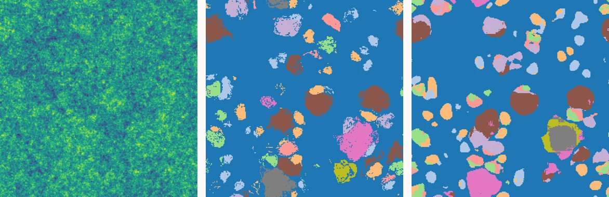

Raffael Jonas
MSc student in Astronomy, University of Vienna
Vienna, Austria
About
I'm a Master's student in Astronomy at the University of Vienna. I'm drawn to large datasets, from simulations and observations alike, and to the computational and statistical methods needed to turn them into physical insight.
My interests center on the formation and topology of the large-scale structure, and what it can reveal about cosmology and the early universe: from initial conditions to the dark matter halos and galaxies that grow within them. I work with N-body and hydrodynamical simulations, semi-analytical models, and tools like baryonification and merger trees to connect these theoretical fields to observable tracers, from galaxy surveys to secondary anisotropies in the CMB, and I'm particularly interested in testing these connections against real survey data.
My goal is a research career in cosmology: contributing to the international, collaborative effort to understand how the structure of the universe, and the physics that shaped it, came to be.
I'm currently looking for PhD positions starting in 2027, ideally at the intersection of cosmological simulations and observational cosmology.
Research
I am a research project member in the Data Science in Astrophysics & Cosmology group at the University of Vienna, working with cosmological simulations to study how galaxies trace the underlying dark matter distribution. Through this I've learned to handle terabyte-scale data efficiently, optimize memory usage, and write high-performance code, as well as run simulations and analyses on supercomputing clusters using Slurm.
-
Galaxy bias in the TNG300 simulation write-up in progress
Studying the Lagrangian bias function of galaxies in the TNG300 simulation, examining galaxies of different stellar masses, with a particular focus on star-forming and satellite galaxies.
-
High-resolution constrained N-body simulations in progress
Master's thesis work, running and analyzing high-resolution constrained N-body simulations as part of a collaboration between the University of Vienna and DIPC.
Interests Structure formation and evolution · galaxy–halo and matter–tracer connections · secondary CMB anisotropies · N-body and hydrodynamical simulations · semi-analytical models · simulation post-processing (baryonification, merger trees) · comparing simulations to survey data
Experience
-
2026 – 2027
Tutor, Department of Astrophysics University of Vienna
-
Jul – Sep 2026
Erasmus+ Funded Research Internship, Department of Computational Cosmology DIPC, Donostia / San Sebastián Supervisor: Prof. Raúl Angulo
-
2025 – 2026
Student Assistant, Data Science in Astrophysics & Cosmology University of Vienna Supervisors: Oliver Hahn & Jens Stücker
Education
-
2025–2027 (expected)
MSc, Astronomy University of Vienna Grade: 1.0 (current, 59/120 ECTS; 4.0/4.0 US GPA)
-
2022 – 2025
BSc, Astronomy University of Vienna Grade: 1.74 (Austrian scale, 1–5, 1 best; ≈ 3.26/4.0 US GPA)
Thesis: Excursion Set Theory Halo Mass Function
Supervisors: Agata Wisłocka & Oliver HahnDerived a universal halo mass function analytically via spherical collapse in the Excursion Set framework, benchmarking Gaussian, Top-Hat, Sharp-k, and Smooth-k filters against simulation-calibrated fits, and tested the “perfect collapse” methodology of Wisłocka et al. (2025, MNRAS) for the Smooth-k filter across 16 L-Gadget realizations.
Projects & Talks
-
Predicting Halo Mass with a 3D CNN
Trained a 3D U-Net convolutional neural network to make field-level predictions, per voxel, of collapse and final halo mass class directly from the initial density field of around 100 N-body simulations. The predictions were used to reconstruct the halo mass function and benchmarked against literature models.

Input density Ground truth PredictionSame simulation slice: initial density field, true halo mass classes, and the model’s predicted classes, each voxel colored by mass class. -
Slides from talks and presentations
Coursework and research presentations, collected on GitHub.